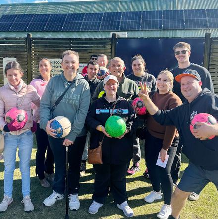

Real voices. Real stories.
Every story matters. By sharing real experiences, we learn to see the world in new ways and help create a place where everyone belongs.
Explore stories, communication boards, social story ideas, and podcasts designed to support inclusion, understanding, and connection.
Stories and resources for everyone
These resources are here to help people learn, communicate, and feel more confident in the community.
They can be used by people with disability, families, support workers, clubs, organisations, and anyone who wants to create more inclusive spaces.

Stories
Read real stories from people sharing their experiences, achievements, and journeys.
Read moreCommunication Boards
Access communication boards that can support people to share needs, choices, and feelings.
Read moreSocial Stories Ideas
Explore social story ideas that can help people prepare for different situations and activities.
Read morePodcast
Listen to conversations and resources that support inclusion, confidence, and belonging.
Read more